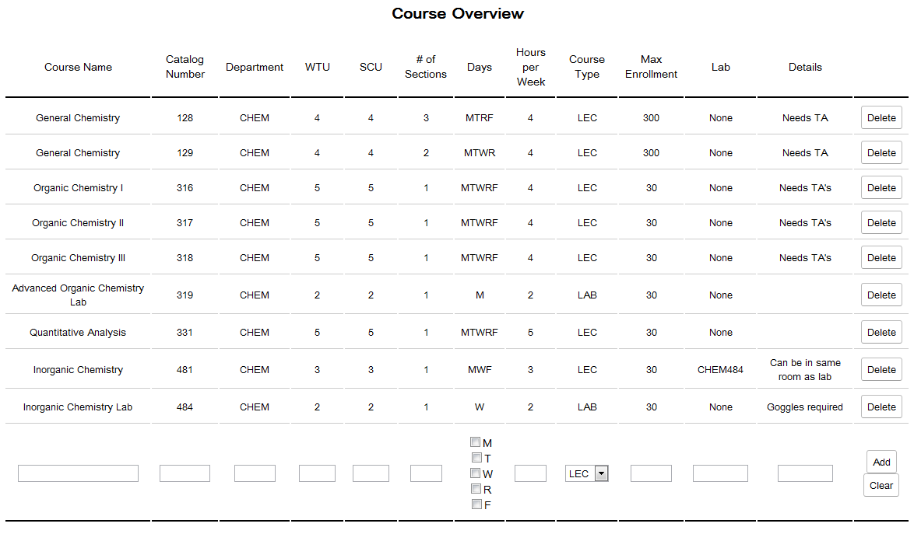
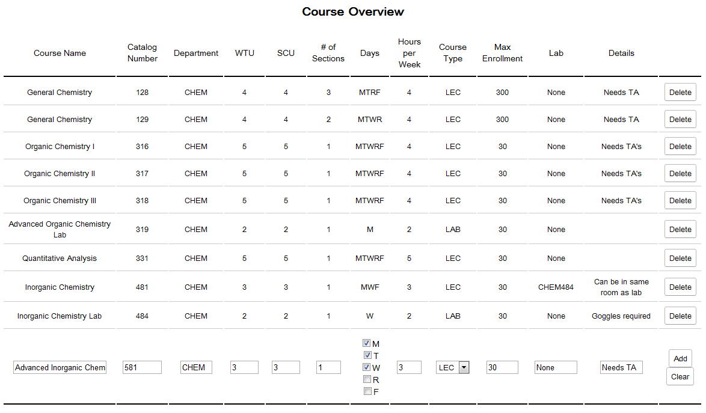
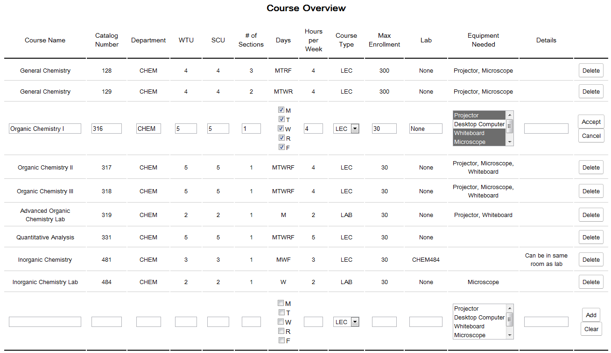
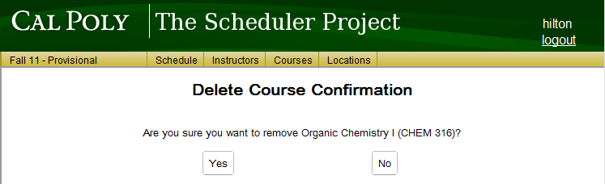

Once an administrator clicks on the Courses button on the top menu, or clicks on the Courses Add/Remove link on the home page, they are greeted with the course overview screen.

Figure 1: The main course list
The Course Overview list displays a list of all courses saved for the department.
The user may add a course by entering the course's information into the spaces on the bottom row of the list. An example is shown in Figure 2. Once the information is entered, the user must click on the Add button to save the new course to the list.
The user may edit any course by selecting the Edit button next to that course. This selection brings up the Edit mode for that course.
The user may delete any course by selecting the Delete button next to that course. This selection brings up the Delete Course Confirmation screen.
A new course's information is entered into the text boxes on the bottom row of the course overview list. Once the information is entered, the user must click on the Add button to save the new course to the list. If the user does not want the information that has been entered to be saved, the user may navigate away from the courses page without pressing Add, or the user may select Clear to clear all values from the row.

Figure 2: Filling in a new course's information
Clicking on the Edit button next to a course will cause that course's row's cells to become editable as seen in Figure 3.

Figure 3: Edit a course's information
Any information about the course can be edited from this view. Once the user is satisfied with their edits, the user must select the Accept button to save their changes to the course. Otherwise, the user's changes can be undone by selecting the Cancel button.
Clicking on the Delete button next to a course will cause a confirmation view to appear like in Figure 4.

Figure 4: Confirmation for deleting a course
For added certainty in the delete confirmation view, the prompt includes the course's department and catalog number in addition to the course's name. In order to confirm the deletion of the stated course, the user must select the Yes button. Otherwise, the No button will cancel the deletion attempt. Upon selecting either button, the screen will return back to the Course Overview. If deletion was confirmed, the deleted course will no longer be in the list.